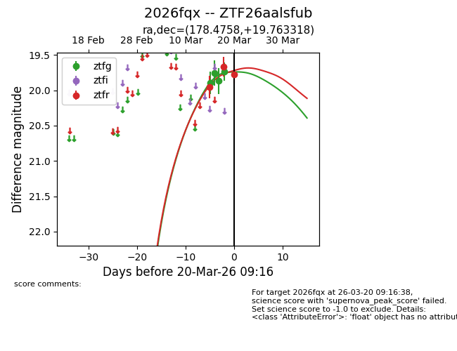
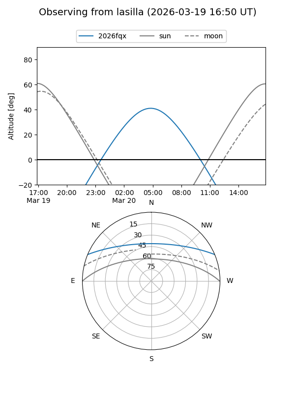
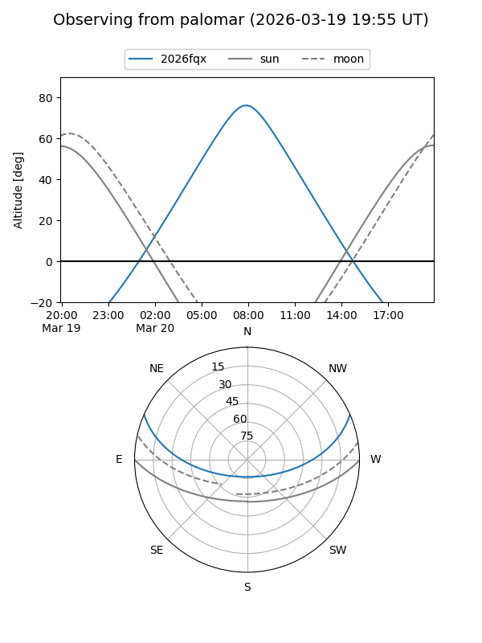
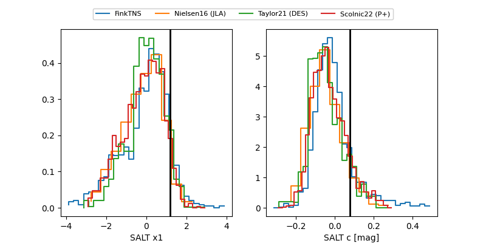

2026fqx
Target 2026fqx at 2026-03-20 09:18
Aliases and brokers:
FINK: link
Lasair: link
ALeRCE: link
TNS: link
YSE: link
alt names
ZTF26aalsfub (ztf,fink_ztf)
2026fqx (tns,yse)
Coordinates:
equatorial (ra, dec) = 178.4758,+19.76332
equatorial (HMS+DMS) = 11:53:54.19,+19:45:47.94
galactic (l, b) = (239.0732,+74.90501)
Flags:
Photometry:
last ztfg=19.74, ztfr=19.77
4 ztfg, 3 ztfr detections
Lightcurve

Visibility


Additional plots
